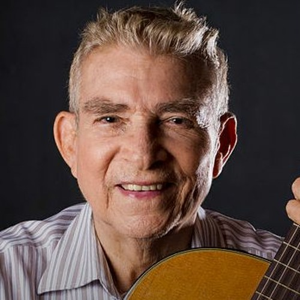

NICARAGUAN SONGWRITTERS
CARLOS MEJÍA GODOY
Carlos Arturo Mejía Godoy is a Nicaraguan musician, composer and singer-songwriter, and one of the main representatives of the testimonial song of his country.
He was born in Nicaragua on June 27, 1943 in the city of Somoto, department of Madriz. He is one of the most outstanding representatives of the Nicaraguan testimonial song or “new song”
His parents, Carlos Alberto Mejía Fajardo (musician) and María Elsa Godoy de Mejía (school teacher and bread artisan). Carlos Mejía Godoy has transcended all the frontiers of art and has come a long way to become a multifaceted popular character. Among his songs are: Son tu perjúmenes mujer, Nicaragua, Nicaragüita, Quincho barrelete, Flor de pino, La tumba del guerrillero, El Solar de Monimbó, Alforja peasant, I love you Nicaragua, Flower of my hill, Palomita Guasiruca, El Cristo de Palacagüina, a Gaul from Chilincocos.
CAMILO ZAPATA
Ramón Arnoldo Zapata Zúñiga, better known as Camilo Zapata (Managua, September 25, 1917 - June 23, 2009), was a Nicaraguan composer and singer-songwriter considered the creator of the Son nica, Nicaragua's own and characteristic musical rhythm, being one of the the most important musicians and composers of Nicaraguan popular vernacular music.
He later premiered "El Nandaimeño", "El Solar de Monimbó" and "El Ganado Colorado", to name three of his consecrating pieces, which are executed in a rhythm that José Francisco Borgén
His humility attracts sympathy; but, more than his humility, the fact of bringing to the microphone fresh melodies from our fields "and also from our towns and citadels, as he will reveal in his songs" Nindirí "," Ticuantepe "and" Callecita Colonial ".
KATIA CARDENAL
Katia Cardenal Barquero was born in Managua, Nicaragua in 1963. Her interest in music began at a very early age. She is from a family of writers, poets and painters. At the age of fifteen, she joined the choir of the Colegio Teresiano de Managua where she studied primary and secondary school, obtaining a high school diploma in 1981.
Singer
She and her brother Salvador Cardenal, formed the Duo Guardabarranco in 1980, recording five albums and touring more than 20 countries in Europe and America in 15 years of artistic career.
At that time she also works as a soloist in some activities in Canada, Norway, Nicaragua and Russia, obtaining first place in 1990 as a performer at the national OTI festival and second place at the international OTI in Las Vegas.
TINO LÓPEZ GUERRA
Constantino López Guerra, better known as Tino López Guerra (Chinandega, July 20, 1906 - Managua, July 19, 1967), was a Nicaraguan composer of popular vernacular music, being considered the "King of the Nicaraguan Corrido" because his most known belong to this Mexican musical rhythm.
He was born in Chinandega, on July 20, 1906, in the west of the country, his parents being the doctor Eduardo López Robelo and Mrs. Celina Guerra Lizano, maternal granddaughter of the president of Costa Rica Saturnino Lizano Gutiérrez. He had six brothers. He married Consuelo Rosales with whom he had two children: Constantino and María del Socorro.
He died in Managua on July 19, 1967 and was buried just on his 61st birthday, on July 20 in the Managua General Cemetery. In 2006, on the centenary of his birth, he was transferred to the San Pedro Cemetery as an illustrious character of the Nation that he loved so much.
OTTO DE LA ROCHA
Otto Benjamín de la Rocha López (Jinotega, August 23, 1933-Managua, May 25, 2020)1 was a Nicaraguan singer-songwriter, composer and radio actor known for the characterization of the picaresque character of Aniceto Prieto.
He was the son of Benjamín de la Rocha and Graciela López, he never studied music, but he inherited his musical love from his maternal grandfather Juan Fajardo, who was a relative of the father of the brothers Carlos and Luis Enrique Mejía Godoy. He married three times, his last wife was the radio actress Georgina Valdivia, with whom he shared radio characters and television ads. From three marriages he had ten children.
He died at the age of eighty-six on May 25, 2020 due to an illness that had plagued him since 2016.


